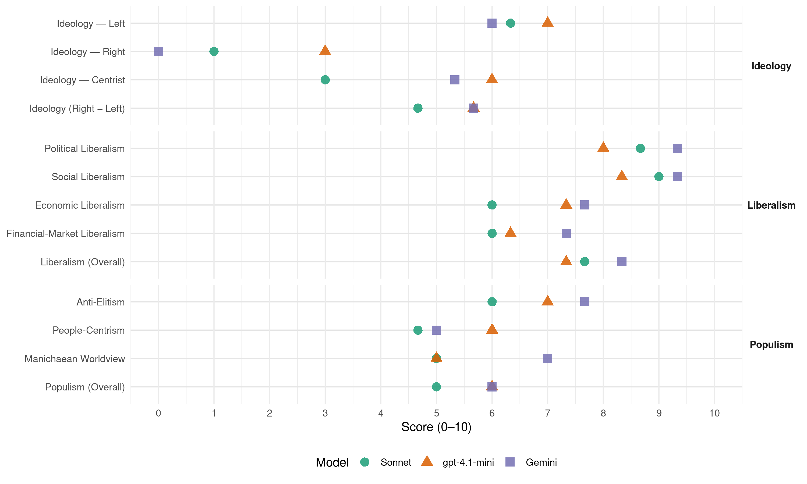

E14-PM (Hungary, 2018)
manifesto_id 86340_201804
Get full text: This site shows derived annotations and short verbatim quotes only. The full manifesto text is © Manifesto Project / WZB — obtain it via manifesto-project.wzb.eu using the manifesto_id above.
Headline scores
| Dimension | Sonnet | gpt-4.1-mini | Gemini |
|---|---|---|---|
| Populism (Overall) | 5.0 | 6.0 | 6.0 |
| Anti-Elitism | 6.0 | 7.0 | 7.7 |
| People-Centrism | 4.7 | 6.0 | 5.0 |
| Manichaean Worldview | 5.0 | 5.0 | 7.0 |
| Ideology (Right − Left) | 4.7 | 5.7 | 5.7 |
| Liberalism (Overall) | 7.7 | 7.3 | 8.3 |
| Political Liberalism | 8.7 | 8.0 | 9.3 |
| Social Liberalism | 9.0 | 8.3 | 9.3 |
| Economic Liberalism | 6.0 | 7.3 | 7.7 |
| Financial-Market Liberalism | 6.0 | 6.3 | 7.3 |
Evidence per dimension
Economic Liberalism
Gemini · score 8.0 · verified · chunk 1
“szabad kereskedelem, piaci innováció és”
változtatni kell. Nekünk az Együttben meggyőződésünk: szabad kereskedelem, piaci innováció és törekvő polgárok nélkül nem lehet
Gemini · score 7.0 · verified · chunk 2
“nyitott, de szabályozott tankönyvpiacot hozunk”
hátrányos helyzetű gyerekek lemorzsolódását. 3. Az államosított tankönyvpiac helyett nyitott, de szabályozott tankönyvpiacot hozunk létre, hogy a pedagógusok kiválaszthassák
Gemini · score 8.0 · verified · chunk 3
“vásárlók kiszolgálásának javítása és a piaci verseny erősítése”
pénzforgalom átláthatóbbá tétele érdekében. 357. A vásárlók kiszolgálásának javítása és a piaci verseny erősítése érekében megszüntetjük a pláza-stopot és hatályon kívül
gpt-4.1-mini · score 8.0 · verified · chunk 1
“Szigorú költségvetési fegyelmet érvényesítünk, az EU-tagságunkból következő maastrichti kritériumokat betartjuk”
Szigorú költségvetési fegyelmet érvényesítünk, az EU-tagságunkból következő maastrichti kritériumokat betartjuk, a költségvetési hiányt a 3 %-os szint alatt tartjuk, és csökkentjük az államadósságot az éves GDP 60 százalékát elérő szintig.
gpt-4.1-mini · score 7.0 · verified · chunk 2
“Támogatjuk a mezőgazdaság és az élelmiszeripar nemzetközi versenyképességének javítását”
311 Támogatjuk a mezőgazdaság és az élelmiszeripar nemzetközi versenyképességének javítását, 312 Felszámoljuk a Fidesz tisztességtelen birtokpolitikáját.
gpt-4.1-mini · score 7.0 · verified · chunk 3
“Megszüntetjük a büntető jellegű különadókat”
353. Megszüntetjük a büntető jellegű különadókat. 354. Nem járhat állami támogatás olyan külföldi befektetőnek, amely szakszervezet- és munkavállalói önszerveződés-ellenes politikát folytat a gyárában.
Sonnet · score 7.0 · mixed · chunk 1
“szabad kereskedelem, piaci innováció és törekvő polgárok”
Vállalkozások section: meggyőződésünk: szabad kereskedelem, piaci innováció és törekvő polgárok nélkül nem lehet jólétet teremteni.
Sonnet · score 6.0 · verified · chunk 2
“nyitott, de szabályozott tankönyvpiacot hozunk”
Az államosított tankönyvpiac helyett nyitott, de szabályozott tankönyvpiacot hozunk létre, hogy a pedagógusok kiválaszthassák
Sonnet · score 6.0 · mixed · chunk 3
“piaci versenyt”
355. A banki költségek csökkentése érdekében erősítjük a piaci versenyt. 356. Aktív állami szerepvállalással ösztönözzük a bankkártya használatot
Financial-Market Liberalism
Gemini · score 7.0 · verified · chunk 1
“magánnyugdíj-pénztári tagságukat megtartók számára biztosítjuk”
támogatásokkal ösztönözzük, hogy jelentősen szélesítsük azok körét, akik maguknak is tudnak takarékoskodni idős napjaikra 235 A magánnyugdíj-pénztári tagságukat megtartók számára biztosítjuk annak lehetőségét, hogy megtakarításukat
Gemini · score 7.0 · verified · chunk 2
“szolgáltatók közötti verseny élénkítése és a költségek”
másik nyugdíjcélú megtakarítási formába átvigyék. 236. A szolgáltatók közötti verseny élénkítése és a költségek csökkentése érdekében átjárhatóbbá tesszük a különböző
Gemini · score 8.0 · verified · chunk 3
“szolgáltatók közötti verseny élénkítése és a költségek csökkentése”
megtakarítási formába átvigyék. 236. A szolgáltatók közötti verseny élénkítése és a költségek csökkentése érdekében átjárhatóbbá tesszük a különböző nyugdíjcélú megtakarítási
gpt-4.1-mini · score 7.0 · verified · chunk 1
“Csatlakozunk az Európai Ügyészséghez az uniós források elköltésének hatékony felügyelete érdekében”
Intézményi garanciákat és érdemi szankciólehetőséget kell teremtenünk a közösségi szabályokat, különösen a szabadság és demokrácia, illetve a jogállamiság szabályait megsértő tagországokkal szemben. Csatlakozunk az Európai Ügyészséghez az uniós források elköltésének hatékony felügyelete és a jogbiztonság megerősítése érdekében.
gpt-4.1-mini · score 6.0 · verified · chunk 2
“A befektetési teljesítmény javításának érdekében javítjuk az önkéntes nyugdíjpénztárak működésének szabályozását”
233. A befektetési teljesítmény javításának érdekében javítjuk az önkéntes nyugdíjpénztárak működésének szabályozását. 234. A cafeteria (a béren kívüli juttatások) rendszerében kiemelt adó- és járulékkedvezménnyel ösztönözzük a nyugdíjcélú munkáltatói hozzájárulásokat.
gpt-4.1-mini · score 6.0 · verified · chunk 3
“A banki költségek csökkentése érdekében erősítjük a piaci versenyt”
355. A banki költségek csökkentése érdekében erősítjük a piaci versenyt. 356. Aktív állami szerepvállalással ösztönözzük a bankkártya használatot és a készpénzkímélő megoldásokat a korrupció csökkentése és a pénzforgalom átláthatóbbá tétele érdekében.
Sonnet · score 6.0 · mixed · chunk 1
“Bevezetjük az eurót”
Gazdaság section: Bevezetjük az eurót. A reálbérek emelkedése és az elvándorlás csökkentése érdekében négy évre szóló bérmegállapodást kötünk.
Sonnet · score 6.0 · verified · chunk 2
“Magyar Nemzeti Bank összes, a jegybanki”
Megszüntetjük a Magyar Nemzeti Bank összes, a jegybanki szabályokkal ellentétes alapítványát és intézményét.
Sonnet · score 6.0 · verified · chunk 3
“nagy pénzügyi intézmények spekulatív tőkemozgásainak”
364. Támogatjuk az európai szintű kezdeményezéseket a nagy pénzügyi intézmények spekulatív tőkemozgásainak a közteherviselés alá való bevonására.
Political Liberalism
Gemini · score 10.0 · verified · chunk 1
“liberális demokrácia helyreállítása érdekében megteremtjük”
szabad köztársaság programja, ahol újra liberális demokráciában élhetünk. 81 A liberális demokrácia helyreállítása érdekében megteremtjük a Negyedik Magyar Köztársaságot.
Gemini · score 9.0 · verified · chunk 2
“helyreállítjuk a liberális alkotmányos demokrácia szabályait”
új alkotmányos rendszer formális kialakítása érdekében célzott módosításokkal helyreállítjuk a liberális alkotmányos demokrácia szabályait az Alaptörvény átalakítása révén.
Gemini · score 9.0 · verified · chunk 3
“demokratikus intézmények hatékony monitorozását és közös európai értékeink betartását”
Alapjogi Chartát és aktívan segítenünk az olyan mechanizmusok létrejöttét, melyek lehetővé teszik a demokratikus intézmények hatékony monitorozását és közös európai értékeink betartását. 465. Intézményi garanciákat és érdemi szankció-lehetőséget
gpt-4.1-mini · score 9.0 · verified · chunk 1
“Megerősítjük az Alapjogi Chartát, és segítjük olyan mechanizmusok létrejöttét”
Magyarország nemzeti érdekeivel összhangban támogatjuk az Európai Unió tagállamainak a korábbiaknál szorosabb együttműködését. Megerősítjük az Alapjogi Chartát, és segítjük olyan mechanizmusok létrejöttét, amelyek lehetővé teszik a demokratikus intézmények hatékony ellenőrzését és közös, európai értékeink betartását.
gpt-4.1-mini · score 8.0 · verified · chunk 2
“A liberális demokrácia helyreállítása érdekében megteremtjük a Negyedik Magyar Köztársaságot”
SZABAD KÖZTÁRSASÁG - JOGÁLLAM 81. A liberális demokrácia helyreállítása érdekében megteremtjük a Negyedik Magyar Köztársaságot. 82. A magyar alkotmányos demokrácia 1989-90-es örökségéből megtartjuk és megerősítjük az alkotmányos szerkezetre és a végrehajtó hatalom kialakítására vonatkozó szabályokat.
gpt-4.1-mini · score 7.0 · verified · chunk 3
“Garantáljuk a nyugdíjak értékállóságát”
221. Igazságosabb, rugalmasabb és fenntarthatóbb nyugdíjrendszert teremtünk. Generációk viadala helyett valamennyi generáció érdekeit figyelembe vesszük a nyugdíjrendszerről hozott döntések során. 222. Garantáljuk a nyugdíjak értékállóságát.
Sonnet · score 9.0 · verified · chunk 1
“liberális demokrácia helyreállítása érdekében”
Jogállam section: A liberális demokrácia helyreállítása érdekében megteremtjük a Negyedik Magyar Köztársaságot.
Sonnet · score 9.0 · verified · chunk 2
“liberális demokrácia helyreállítása érdekében”
SZABAD KÖZTÁRSASÁG - JOGÁLLAM 81. A liberális demokrácia helyreállítása érdekében megteremtjük a Negyedik Magyar Köztársaságot.
Sonnet · score 8.0 · verified · chunk 3
“demokratikus intézmények hatékony monitorozását”
464. Meg kell erősítenünk az Alapjogi Chartát és aktívan segítenünk az olyan mechanizmusok létrejöttét, melyek lehetővé teszik a demokratikus intézmények hatékony monitorozását és közös európai értékeink betartását.
Liberalism (Overall)
Gemini · score 9.0 · verified · chunk 1
“szabadság és a teljesítmény hívei”
titkosszolgálati aktái sem nyilvánosak még. A szabadság és a teljesítmény hívei liberális demokrataként nem engedhetik meg, hogy
Gemini · score 8.0 · verified · chunk 2
“helyreállítjuk a liberális alkotmányos demokrácia szabályait”
új alkotmányos rendszer formális kialakítása érdekében célzott módosításokkal helyreállítjuk a liberális alkotmányos demokrácia szabályait az Alaptörvény átalakítása révén.
Gemini · score 8.0 · verified · chunk 3
“vásárlók kiszolgálásának javítása és a piaci verseny erősítése”
pénzforgalom átláthatóbbá tétele érdekében. 357. A vásárlók kiszolgálásának javítása és a piaci verseny erősítése érekében megszüntetjük a pláza-stopot és hatályon kívül
gpt-4.1-mini · score 8.0 · verified · chunk 1
“Megerősítjük az Alapjogi Chartát, és segítjük olyan mechanizmusok létrejöttét”
Magyarország nemzeti érdekeivel összhangban támogatjuk az Európai Unió tagállamainak a korábbiaknál szorosabb együttműködését. Megerősítjük az Alapjogi Chartát, és segítjük olyan mechanizmusok létrejöttét, amelyek lehetővé teszik a demokratikus intézmények hatékony ellenőrzését és közös, európai értékeink betartását.
gpt-4.1-mini · score 7.0 · verified · chunk 2
“A liberális demokrácia helyreállítása érdekében megteremtjük a Negyedik Magyar Köztársaságot”
SZABAD KÖZTÁRSASÁG - JOGÁLLAM 81. A liberális demokrácia helyreállítása érdekében megteremtjük a Negyedik Magyar Köztársaságot. 82. A magyar alkotmányos demokrácia 1989-90-es örökségéből megtartjuk és megerősítjük az alkotmányos szerkezetre és a végrehajtó hatalom kialakítására vonatkozó szabályokat.
gpt-4.1-mini · score 7.0 · verified · chunk 3
“Garantáljuk a nyugdíjak értékállóságát”
221. Igazságosabb, rugalmasabb és fenntarthatóbb nyugdíjrendszert teremtünk. Generációk viadala helyett valamennyi generáció érdekeit figyelembe vesszük a nyugdíjrendszerről hozott döntések során. 222. Garantáljuk a nyugdíjak értékállóságát.
Sonnet · score 8.0 · verified · chunk 1
“újra liberális demokráciában élhetünk”
Jogállam section: Programunk egy szabad köztársaság programja, ahol újra liberális demokráciában élhetünk.
Sonnet · score 8.0 · verified · chunk 2
“liberális alkotmányos demokrácia szabályait”
helyreállítjuk a liberális alkotmányos demokrácia szabályait az Alaptörvény átalakítása révén.
Sonnet · score 7.0 · verified · chunk 3
“azonos nemű avagy házasságot kötni nem akaró párok esélyegyenlőségét”
216. A regisztrált élettársi kapcsolat jogegyenlőségét a házassággal minden állami és önkormányzati intézkedés szintjén garantáljuk, ezzel is elősegítve az azonos nemű avagy házasságot kötni nem akaró párok esélyegyenlőségét.
Anti-Elitism
Gemini · score 8.0 · verified · chunk 1
“Orbán Viktor érdekkörének lopott vagyonát”
orvosok, ápolók kivándorlását. Orbán Viktor érdekkörének lopott vagyonát visszavesszük és kárpótlásra fordítjuk.
Gemini · score 8.0 · verified · chunk 2
“Tőled is sok földet lopott el a Fidesz”
MŰKÖDŐ ÁLLAM MEZŐGAZDASÁG Tőled is sok földet lopott el a Fidesz azzal, hogy korrupt módon eladta
Gemini · score 7.0 · verified · chunk 3
“kasszák online bekötése mögötti korrupt maffiarendszert”
programját. Az érintett vállalkozásokat és vállalkozókat új ösztönzőkkel támogatjuk a jelentkező bekötési többletköltség csökkentésében. 375. Megszüntetjük a kasszák online bekötése mögötti korrupt maffiarendszert. 376. Megszüntetjük a kaszinókoncessziókat
gpt-4.1-mini · score 8.0 · verified · chunk 1
“Az Orbán Viktor érdekkörének lopott vagyonát visszavesszük”
Orbán Viktor érdekkörének lopott vagyonát visszavesszük és kárpótlásra fordítjuk. Bevezetjük az eurót, szorosan együttműködünk az Európai Unió országaival.
gpt-4.1-mini · score 6.0 · verified · chunk 2
“Tőled is sok földet lopott el a Fidesz”
MŰKÖDŐ ÁLLAM MEZŐGAZDASÁG Tőled is sok földet lopott el a Fidesz azzal, hogy korrupt módon eladta az állami tulajdonban levő területeket. Mi tisztességes mezőgazdaság-politikát szeretnénk hazánk számára.
gpt-4.1-mini · score 5.0 · mixed · chunk 3
“Felszámoljuk a Fidesz tisztességtelen birtokpolitikáját”
311. Támogatjuk a mezőgazdaság és az élelmiszeripar nemzetközi versenyképességének a javítását, a hatékony gazdálkodási formák és termelési rendszerek adaptálását és fejlesztését. 312. Felszámoljuk a Fidesz tisztességtelen birtokpolitikáját. Támogatjuk a valóban helyben élő gazdák lehetőségeit, az adórendszeren keresztül is ösztönözzük a földbirtoklás és földhasználat fedésbe hozását, és közben törekszünk a méretgazdaságossági szempontból fenntartható birtokméretek kialakítására.
Sonnet · score 8.0 · verified · chunk 1
“Orbán Viktor érdekkörének lopott vagyonát visszavesszük”
Kulcsígéretek section: Orbán Viktor érdekkörének lopott vagyonát visszavesszük és kárpótlásra fordítjuk.
Sonnet · score 6.0 · verified · chunk 2
“Tőled is sok földet lopott el a Fidesz”
MEZŐGAZDASÁG Tőled is sok földet lopott el a Fidesz azzal, hogy korrupt módon eladta az állami tulajdonban levő területeket.
Sonnet · score 4.0 · verified · chunk 3
“Felszámoljuk a Fidesz tisztességtelen birtokpolitikáját”
312. Felszámoljuk a Fidesz tisztességtelen birtokpolitikáját. Támogatjuk a valóban helyben élő gazdák lehetőségeit
Ideology — Centrist
Gemini · score 5.0 · verified · chunk 1
“szabadságunk felszámolása történik 2010”
Téged is fojtogat az Orbánrezsim levegője? Te is úgy érzed, szabadságunk felszámolása történik 2010 óta? Mi az Együttben azt
Gemini · score 5.0 · verified · chunk 2
“Az Együtt a középúton jár”
tisztességes mezőgazdaság-politikát szeretnénk hazánk számára. Az Együtt a középúton jár az agrárium ügyeiben. Hiszünk abban,
Gemini · score 6.0 · verified · chunk 3
“kasszák online bekötése mögötti korrupt maffiarendszert”
programját. Az érintett vállalkozásokat és vállalkozókat új ösztönzőkkel támogatjuk a jelentkező bekötési többletköltség csökkentésében. 375. Megszüntetjük a kasszák online bekötése mögötti korrupt maffiarendszert. 376. Megszüntetjük a kaszinókoncessziókat
gpt-4.1-mini · score 7.0 · verified · chunk 1
“A magyar nemzeti kultúra nem a jobb- vagy a baloldalé, nem a liberálisoké vagy a konzervatívoké”
A magyar nemzeti kultúra nem a jobb- vagy a baloldalé, nem a liberálisoké vagy a konzervatívoké. Hanem mindannyiunké. Mi az Együttben abban hiszünk, hogy az államnak a minőségi kultúrát, a népművelést és közösségünk összetartozását kell erősítenie határainkon belül és kívül.
gpt-4.1-mini · score 6.0 · verified · chunk 2
“Az Együtt a középúton jár az agrárium ügyeiben”
MŰKÖDŐ ÁLLAM MEZŐGAZDASÁG Az Együtt a középúton jár az agrárium ügyeiben. Hiszünk abban, hogy az élelemiszer-ellátás biztonságához szükséges a nagyipari mezőgazdaság.
gpt-4.1-mini · score 5.0 · verified · chunk 3
“Mindenkit magyarnak tekintünk, aki használja a magyar nyelvet”
455. A határon túli politikánk alapvető célja, hogy a külhoni magyarok és közösségeik magyar identitása és nyelve, valamint a magyar kultúrához való kötődése megmaradjon. 456. Mindenkit magyarnak tekintünk, aki használja a magyar nyelvet és kötődik a magyar kultúrához. Elismerjük a vegyes identitású életközösségeket a nemzetpolitikában és a támogatásoknál is.
Sonnet · score 3.0 · verified · chunk 1
“Az Együtt a korrupcióellenes harc pártja”
Átláthatóság section: Az Együtt a korrupcióellenes harc pártja. Amikor győzünk, már csak a csökkenő korrupció miatt is azonnal boldogabb lesz az ország.
Sonnet · score 4.0 · verified · chunk 2
“Az Együtt a középúton jár az agrárium”
Az Együtt a középúton jár az agrárium ügyeiben. Hiszünk abban, hogy az élelemiszer-ellátás biztonságához szükséges a nagyipari mezőgazdaság.
Sonnet · score 2.0 · verified · chunk 3
“Szabadság és igazságosság”
Impresszum Szabadság és igazságosság Az Együtt választási programja Felelős kiadó: Együtt - A Korszakváltók Pártja
Ideology — Left
Gemini · score 6.0 · verified · chunk 1
“kizsákmányoló munkaerőkölcsönzést, szigorítjuk a”
közösségi szolgálat teljesítése. 57. oldal Betiltjuk a kizsákmányoló munkaerőkölcsönzést, szigorítjuk a munkaerőkölcsönző cégekre vonatkozó szabályok
Gemini · score 6.0 · verified · chunk 2
“Fokozatosan bevezetjük a minimumjövedelmet,”
társadalombiztosítási és szociálpolitikai rendszer legyengítésére vagy megszüntetésére. 191. Fokozatosan bevezetjük a minimumjövedelmet, amely a jelenlegi segélyezési rendszer
gpt-4.1-mini · score 8.0 · verified · chunk 1
“Pótoljuk a szociális ellátások és a nyugdíjminimum 10 éve elmaradt emelését”
Szakítunk azzal a gyakorlattal, amelyben gazdasági nehézségek esetén elsőként a szegények támogatását csökkentik. Pótoljuk a szociális ellátások és a nyugdíjminimum 10 éve elmaradt emelését, és garantált inflációkövetést vezetünk be ezekre az ellátásokra.
gpt-4.1-mini · score 7.0 · verified · chunk 2
“Felszámoljuk a Fidesz tisztességtelen birtokpolitikáját”
312 Felszámoljuk a Fidesz tisztességtelen birtokpolitikáját. Támogatjuk a valóban helyben élő gazdák lehetőségeit.
gpt-4.1-mini · score 6.0 · verified · chunk 3
“Felszámoljuk a Fidesz tisztességtelen birtokpolitikáját”
311. Támogatjuk a mezőgazdaság és az élelmiszeripar nemzetközi versenyképességének a javítását, a hatékony gazdálkodási formák és termelési rendszerek adaptálását és fejlesztését. 312. Felszámoljuk a Fidesz tisztességtelen birtokpolitikáját. Támogatjuk a valóban helyben élő gazdák lehetőségeit, az adórendszeren keresztül is ösztönözzük a földbirtoklás és földhasználat fedésbe hozását, és közben törekszünk a méretgazdaságossági szempontból fenntartható birtokméretek kialakítására.
Sonnet · score 7.0 · verified · chunk 1
“Betiltjuk a kizsákmányoló munkaerőkölcsönzést”
Munkaügy section: Betiltjuk a kizsákmányoló munkaerőkölcsönzést, szigorítjuk a munkaerőkölcsönző cégekre vonatkozó szabályok betartatását.
Sonnet · score 6.0 · verified · chunk 2
“minimumjövedelmet, amely a jelenlegi segélyezési”
Fokozatosan bevezetjük a minimumjövedelmet, amely a jelenlegi segélyezési rendszer számos juttatását kiváltja.
Sonnet · score 6.0 · verified · chunk 3
“Betiltjuk a kizsákmányoló munkaerőkölcsönzést”
336. Betiltjuk a kizsákmányoló munkaerőkölcsönzést, szigorítjuk a munkaerőkölcsönző cégekre vonatkozó szabályok betartatását.
Ideology (Right − Left)
Gemini · score 6.0 · verified · chunk 1
“Orbán-rezsim minden jogfosztottja számára”
visszavesszük és kárpótlásra fordítjuk. 130 Az Orbán-rezsim minden jogfosztottja számára igazságot teszünk, és őket kárpótoljuk.
Gemini · score 6.0 · verified · chunk 2
“Felszámoljuk a Fidesz tisztességtelen birtokpolitikáját.”
nemzetközi versenyképességének javítását, 312 Felszámoljuk a Fidesz tisztességtelen birtokpolitikáját. Támogatjuk a valóban helyben élő
Gemini · score 5.0 · verified · chunk 3
“kasszák online bekötése mögötti korrupt maffiarendszert”
programját. Az érintett vállalkozásokat és vállalkozókat új ösztönzőkkel támogatjuk a jelentkező bekötési többletköltség csökkentésében. 375. Megszüntetjük a kasszák online bekötése mögötti korrupt maffiarendszert. 376. Megszüntetjük a kaszinókoncessziókat
gpt-4.1-mini · score 7.0 · verified · chunk 1
“Pótoljuk a szociális ellátások és a nyugdíjminimum 10 éve elmaradt emelését”
Szakítunk azzal a gyakorlattal, amelyben gazdasági nehézségek esetén elsőként a szegények támogatását csökkentik. Pótoljuk a szociális ellátások és a nyugdíjminimum 10 éve elmaradt emelését, és garantált inflációkövetést vezetünk be ezekre az ellátásokra.
gpt-4.1-mini · score 5.0 · verified · chunk 2
“Az Együtt a középúton jár az agrárium ügyeiben”
MŰKÖDŐ ÁLLAM MEZŐGAZDASÁG Az Együtt a középúton jár az agrárium ügyeiben. Hiszünk abban, hogy az élelemiszer-ellátás biztonságához szükséges a nagyipari mezőgazdaság.
gpt-4.1-mini · score 5.0 · verified · chunk 3
“Felszámoljuk a Fidesz tisztességtelen birtokpolitikáját”
311. Támogatjuk a mezőgazdaság és az élelmiszeripar nemzetközi versenyképességének a javítását, a hatékony gazdálkodási formák és termelési rendszerek adaptálását és fejlesztését. 312. Felszámoljuk a Fidesz tisztességtelen birtokpolitikáját. Támogatjuk a valóban helyben élő gazdák lehetőségeit, az adórendszeren keresztül is ösztönözzük a földbirtoklás és földhasználat fedésbe hozását, és közben törekszünk a méretgazdaságossági szempontból fenntartható birtokméretek kialakítására.
Sonnet · score 6.0 · verified · chunk 1
“hisz a szociális piacgazdaságban”
Gazdaság section: Az Együtt hisz a szabályozott versenyben, hisz a szociális piacgazdaságban, hisz az állami beavatkozás jó megoldásaiban.
Sonnet · score 4.0 · verified · chunk 2
“középúton jár az agrárium ügyeiben”
Az Együtt a középúton jár az agrárium ügyeiben. Hiszünk abban, hogy az élelemiszer-ellátás biztonságához szükséges a nagyipari mezőgazdaság.
Sonnet · score 4.0 · verified · chunk 3
“Betiltjuk a kizsákmányoló munkaerőkölcsönzést”
336. Betiltjuk a kizsákmányoló munkaerőkölcsönzést, szigorítjuk a munkaerőkölcsönző cégekre vonatkozó szabályok betartatását.
Ideology — Right
Gemini · score 0.0 · verified · chunk 1
“szorosan együttműködünk az Európai Unió”
lopott vagyonát visszavesszük és kárpótlásra fordítjuk. Bevezetjük az eurót, szorosan együttműködünk az Európai Unió országaival. 10. oldal Ingyenessé
gpt-4.1-mini · score 3.0 · verified · chunk 1
“Mindenkit magyarnak tekintünk, aki használja a magyar nyelvet és kötődik a magyar kultúrához”
Mindenkit magyarnak tekintünk, aki használja a magyar nyelvet és kötődik a magyar kultúrához. Elismerjük a vegyes identitású életközösségeket a nemzetpolitikában és a támogatásoknál is.
gpt-4.1-mini · score 3.0 · verified · chunk 2
“A magyar nemzeti kultúra nem a jobb- vagy a baloldalé”
NYITOTT NEMZET KULTÚRA ÉS EMLÉKEZETPOLITIKA A magyar nemzeti kultúra nem a jobb- vagy a baloldalé, nem a liberálisoké vagy a konzervatívoké. Hanem mindannyiunké.
gpt-4.1-mini · score 3.0 · verified · chunk 3
“Megteremtjük a határőrizet és a határrendészet összehangolt irányításának kormányzati feltételeit”
419. A magyar polgárok védelmének megerősítése érdekében új szervezetet hozunk létre a nemzetbiztonsági intézményrendszeren belül a külföldi hibrid-hadviselés és ennek részeként a kommunikációs-technológiai befolyásolás megelőzésére és kivédésére. 420. Hosszú távú és stabil megoldásokkal védjük meg a magyar határt. Megteremtjük a határőrizet és a határrendészet összehangolt irányításának kormányzati feltételeit.
Sonnet · score 1.0 · verified · chunk 1
“Mindenkit magyarnak tekintünk, aki használja a magyar nyelvet”
Nemzetpolitika section: Mindenkit magyarnak tekintünk, aki használja a magyar nyelvet és kötődik a magyar kultúrához.
Sonnet · score 1.0 · verified · chunk 2
“NATO tagállamként a világ legfontosabb katonai”
NATO tagállamként a világ legfontosabb katonai szövetségének lehetünk tagjai. Ez az együttműködés biztonságunk záloga.
Sonnet · score 1.0 · verified · chunk 3
“Hosszú távú és stabil megoldásokkal védjük meg a magyar határt”
420. Hosszú távú és stabil megoldásokkal védjük meg a magyar határt. Megteremtjük a határőrizet és a határrendészet összehangolt irányításának kormányzati feltételeit.
Manichaean Worldview
Gemini · score 7.0 · verified · chunk 1
“mindenkitől legalább 1,2 millió forintot”
Tőled mennyit lopott el Orbán Viktor és a Fidesz 7 év alatt? Szerintünk mindenkitől legalább 1,2 millió forintot, egy négytagú családtól
Gemini · score 7.0 · verified · chunk 2
“korrupt módon eladta az állami tulajdonban”
sok földet lopott el a Fidesz azzal, hogy korrupt módon eladta az állami tulajdonban levő területeket. Mi tisztességes
gpt-4.1-mini · score 6.0 · verified · chunk 1
“Nem szabad engedni, hogy trükkös szerződésekkel törvényesítsék a lopást”
Nem szabad engedni, hogy trükkös szerződésekkel törvényesítsék a lopást, és hogy ne ismerhessük meg saját közelmúltunkat. Mert ha ezt engedjük, akkor tőled is bármit el lehet lopni a jövőben is, és nem lesz tekintélye soha az igazi teljesítménynek.
gpt-4.1-mini · score 4.0 · verified · chunk 2
“Orbán Viktorhoz kötődő korrupt személyi kör”
MEGÚJULÓ KÖZÉLET - IGAZSÁGTÉTEL 129. Az Orbán Viktorhoz kötődő korrupt személyi kör, családtagok és strómanok 2010 után állami befolyással szerzett vagyonát kártalanítás nélkül visszavesszük és kárpótlásra fordítjuk.
gpt-4.1-mini · score 4.0 · mixed · chunk 3
“Felszámoljuk a Fidesz tisztességtelen birtokpolitikáját”
311. Támogatjuk a mezőgazdaság és az élelmiszeripar nemzetközi versenyképességének a javítását, a hatékony gazdálkodási formák és termelési rendszerek adaptálását és fejlesztését. 312. Felszámoljuk a Fidesz tisztességtelen birtokpolitikáját. Támogatjuk a valóban helyben élő gazdák lehetőségeit, az adórendszeren keresztül is ösztönözzük a földbirtoklás és földhasználat fedésbe hozását, és közben törekszünk a méretgazdaságossági szempontból fenntartható birtokméretek kialakítására.
Sonnet · score 7.0 · verified · chunk 1
“Tőled mennyit lopott el Orbán Viktor”
Átláthatóság section: Tőled mennyit lopott el Orbán Viktor és a Fidesz 7 év alatt?
Sonnet · score 5.0 · verified · chunk 2
“az elnyomó Orbán-rendszerrel kollaborálva”
Jóvátételi adót vetünk ki azon vállalkozásokra, amelyek az elnyomó Orbán-rendszerrel kollaborálva anyagi haszonélvezői voltak
Sonnet · score 3.0 · verified · chunk 3
“korrupt maffiarendszert”
375. Megszüntetjük a kasszák online bekötése mögötti korrupt maffiarendszert.
People-Centrism
Gemini · score 5.0 · verified · chunk 1
“minden gyerek egyformán számít”
KULCSÍGÉRETEINK Igazságos családtámogatást vezetünk be, mert nekünk minden gyerek egyformán számít. Önálló gondolkodásra nevelünk
Gemini · score 5.0 · verified · chunk 2
“minden magyar polgár és minden szövetségesünk”
Ez az együttműködés biztonságunk záloga. Minden magyar polgár és minden szövetségesünk biztonsága a mi közös felelősségünk.
gpt-4.1-mini · score 7.0 · verified · chunk 1
“Mi az Együttben egy olyan Magyarországon akarunk élni, ahol nem kell tömegeknek rettegniük attól, hogy mi lesz holnap.”
Sok dolgozó ember számára is nehézséget jelent a megélhetés, és esélyük sincs arra, hogy egyről a kettőre jussanak. Ma 10-ből 4 magyar ember szegénységben él. A szegénység ráadásul beteggé tesz, a szegények sokkal rövidebb ideig élnek. Azok a gyermekek, akik ma Magyarországon szegény családokba születnek, szinte hogy biztosan szegénységben fogják leélni felnőtt életüket is. Mi az Együttben egy olyan Magyarországon akarunk élni, ahol nem kell tömegeknek rettegniük attól, hogy mi lesz holnap.
gpt-4.1-mini · score 5.0 · verified · chunk 2
“A magyar nemzeti kultúra nem a jobb- vagy a baloldalé”
NYITOTT NEMZET KULTÚRA ÉS EMLÉKEZETPOLITIKA A magyar nemzeti kultúra nem a jobb- vagy a baloldalé, nem a liberálisoké vagy a konzervatívoké. Hanem mindannyiunké.
gpt-4.1-mini · score 4.0 · mixed · chunk 3
“Mindenkit magyarnak tekintünk, aki használja a magyar nyelvet”
455. A határon túli politikánk alapvető célja, hogy a külhoni magyarok és közösségeik magyar identitása és nyelve, valamint a magyar kultúrához való kötődése megmaradjon. 456. Mindenkit magyarnak tekintünk, aki használja a magyar nyelvet és kötődik a magyar kultúrához. Elismerjük a vegyes identitású életközösségeket a nemzetpolitikában és a támogatásoknál is.
Sonnet · score 6.0 · verified · chunk 1
“Neked is az az érdeked, hogy a magyar állam”
Családpolitika section: Neked is az az érdeked, hogy a magyar állam számára minden család egyenlő legyen.
Sonnet · score 5.0 · verified · chunk 2
“A te biztonságodat is a mi politikánk”
Minden magyar polgár és minden szövetségesünk biztonsága a mi közös felelősségünk. A te biztonságodat is a mi politikánk tudja a legjobban garantálni.
Sonnet · score 3.0 · verified · chunk 3
“minden gyermek biztonságban nőhessen fel”
237. Nem teszünk különbséget gyermek és gyermek, család és család között. Mindenki maga választhatja meg… Mi abban segítünk, hogy minden gyermek biztonságban nőhessen fel.
Populism (Overall)
Gemini · score 7.0 · verified · chunk 1
“Orbán Viktorhoz kötődő korrupt családtagok”
várólistáit lerövidítjük, a rendelőintézeti előjegyzési listákat maximum egy hetesre csökkentjük. 42. oldal Az Orbán Viktorhoz kötődő korrupt családtagok és strómanok 2010 után
Gemini · score 7.0 · verified · chunk 2
“Felszámoljuk a Fidesz tisztességtelen birtokpolitikáját.”
nemzetközi versenyképességének javítását, 312 Felszámoljuk a Fidesz tisztességtelen birtokpolitikáját. Támogatjuk a valóban helyben élő
Gemini · score 4.0 · verified · chunk 3
“kasszák online bekötése mögötti korrupt maffiarendszert”
programját. Az érintett vállalkozásokat és vállalkozókat új ösztönzőkkel támogatjuk a jelentkező bekötési többletköltség csökkentésében. 375. Megszüntetjük a kasszák online bekötése mögötti korrupt maffiarendszert. 376. Megszüntetjük a kaszinókoncessziókat
gpt-4.1-mini · score 7.0 · verified · chunk 1
“Az Orbán Viktor érdekkörének lopott vagyonát visszavesszük”
Orbán Viktor érdekkörének lopott vagyonát visszavesszük és kárpótlásra fordítjuk. Bevezetjük az eurót, szorosan együttműködünk az Európai Unió országaival.
gpt-4.1-mini · score 5.0 · verified · chunk 2
“Tőled is sok földet lopott el a Fidesz”
MŰKÖDŐ ÁLLAM MEZŐGAZDASÁG Tőled is sok földet lopott el a Fidesz azzal, hogy korrupt módon eladta az állami tulajdonban levő területeket. Mi tisztességes mezőgazdaság-politikát szeretnénk hazánk számára.
gpt-4.1-mini · score 4.0 · mixed · chunk 3
“Felszámoljuk a Fidesz tisztességtelen birtokpolitikáját”
311. Támogatjuk a mezőgazdaság és az élelmiszeripar nemzetközi versenyképességének a javítását, a hatékony gazdálkodási formák és termelési rendszerek adaptálását és fejlesztését. 312. Felszámoljuk a Fidesz tisztességtelen birtokpolitikáját. Támogatjuk a valóban helyben élő gazdák lehetőségeit, az adórendszeren keresztül is ösztönözzük a földbirtoklás és földhasználat fedésbe hozását, és közben törekszünk a méretgazdaságossági szempontból fenntartható birtokméretek kialakítására.
Sonnet · score 7.0 · verified · chunk 1
“felszámoljuk a magyarországi rendszerszintű korrupciót”
Az Együtt a korrupcióellenes harc pártja… felszámoljuk a magyarországi rendszerszintű korrupciót.
Sonnet · score 5.0 · verified · chunk 2
“korrupt módon eladta az állami tulajdonban”
Tőled is sok földet lopott el a Fidesz azzal, hogy korrupt módon eladta az állami tulajdonban levő területeket.
Sonnet · score 3.0 · verified · chunk 3
“Felszámoljuk a Fidesz tisztességtelen birtokpolitikáját”
312. Felszámoljuk a Fidesz tisztességtelen birtokpolitikáját. Támogatjuk a valóban helyben élő gazdák lehetőségeit
Social Liberalism